Bruksanvisning for trenere
Påmeldte, lag, treningsopplegg, øvelsesbank og KI – og hvorfor evalueringen etter hver økt er det viktigste du gjør i appen.
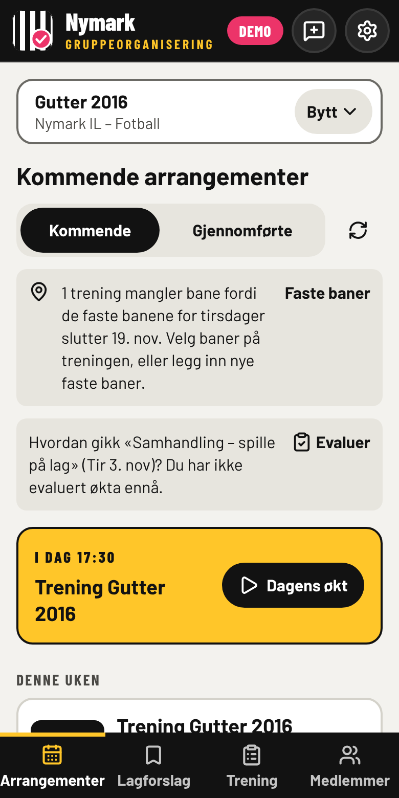
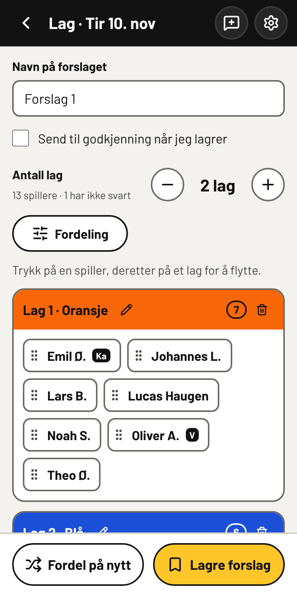
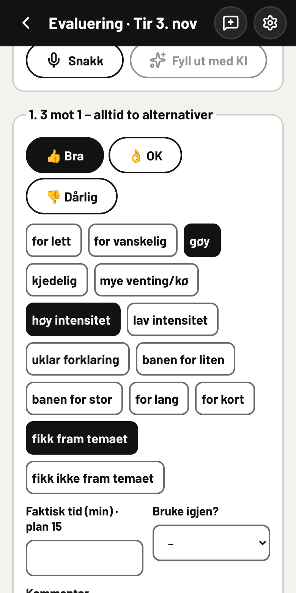
1Kom i gang
Logg inn
Gå til lagorganisering.vercel.app og logg inn med Spond-brukeren din (e-post eller mobilnummer og passord). Passordet brukes bare til å logge inn hos Spond og lagres aldri. Appen leser fra Spond, men skriver aldri dit, så du kan ikke ødelegge noe i Spond.
Får du ikke tilgang, eller mangler KI-knappene, si fra til Kjetil. Tilgang til appen og til KI gis per trener.
Velg gruppe
Første gang velger du gruppa du trener. Du bytter med Bytt øverst på siden.
Legg appen på hjemskjermen
Da åpner den seg i fullskjerm som en vanlig app, og du slipper å lete fram nettadressen på banen.
- iPhone: Åpne siden i Safari, trykk Del (firkant med pil opp) og velg Legg til på Hjem-skjerm. Varsler på iPhone virker bare når appen er åpnet fra hjemskjermen.
- Android: Åpne siden i Chrome, trykk menyen (⋮) og velg Legg til på startskjermen.
Slik er appen bygd opp
| Meny | Hva du finner der |
|---|---|
| Arrangementer | Treninger og kamper fra Spond, med påmeldte, lag og opplegg |
| Lagforslag | Lagrede lag, og lag som venter på godkjenning |
| Trening | Øvelsesbanken, årshjul, «Slik trener vi» og «Laget» (standard, utstyr og faste baner) |
| Medlemmer | Trenere og spillere, med nivå og tagger |
| Snakkeboble | Gi tilbakemelding om feil eller forslag (se kapittel 8) |
| Tannhjul | Innstillinger: lyst/mørkt tema, bruksanvisningen, «Hva er nytt», personvern, logg ut |
På PC ligger menyen til venstre, på mobil nederst. Lyst tema er lettest å lese i sollys.
2Før treningen: påmeldte og lag
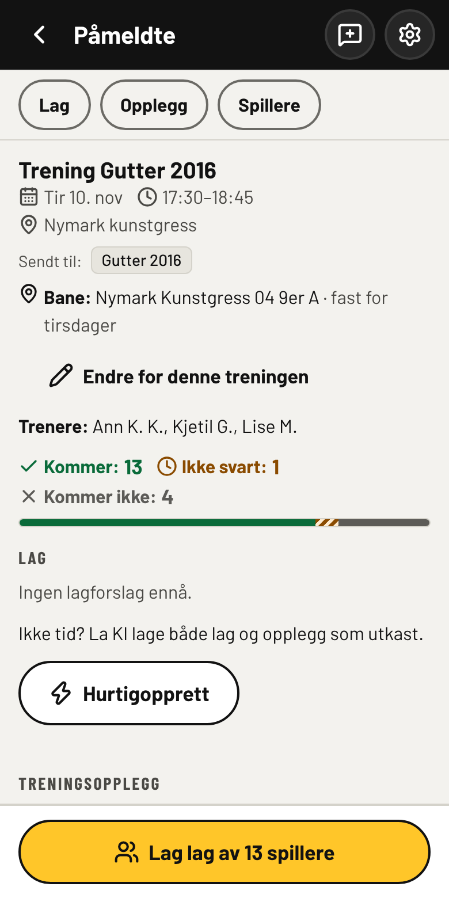
Påmeldte
Trykk på en trening under Arrangementer. Du ser hvem som kommer, ikke har svart og ikke kommer, og hvilke trenere som kommer. Svarene hentes fra Spond. Trykk Oppdater på forsiden for å hente de nyeste svarene.
Bane
Treningen viser hvilken bane dere har, hentet fra lagets faste baner for ukedagen (se kapittel 7). Har dere en annen bane akkurat denne gangen, trykk Endre for denne treningen. Mangler treningen bane, sier appen fra både her og i arrangementslista.
Nivå, tagger og «spiller godt med»
Trykk på en spiller (på arrangementet eller under Medlemmer) for å sette nivå, tagger som Keeper Kaptein Forsvar, og hvem spilleren spiller godt sammen med. Dette brukes når appen fordeler lag, og gjelder hele hovedgruppa. Opplysningene slettes av seg selv 90 dager etter at en spiller har sluttet i Spond-gruppa.
Hurtigopprett – når du har dårlig tid
På en trening uten lag og opplegg kan Hurtigopprett lage både lag og treningsopplegg i ett trykk med lagets vanlige valg: samme antall lag som sist, månedens tema, lagets øktlengde, treningens baner og trenerne som har svart ja. Du ser hva som blir laget før du trykker Lag alt. Alt lagres som utkast som du ser over og godkjenner.
Lag lag
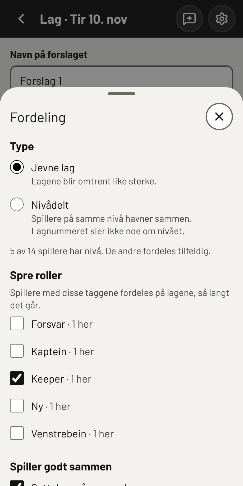
- Trykk Lag lag av … spillere nederst på arrangementet.
- Velg antall lag med + og −.
- Trykk Fordeling og velg:
- Jevne lag eller Nivådelt (lagnummeret sier ikke noe om nivået).
- Spre roller: for eksempel én keeper på hvert lag.
- Spiller godt sammen: holder par på samme lag.
- Forrige treninger: Som sist eller Rullér (nye lagkamerater).
- Flytt spillere: trykk på spilleren, så på laget. Du kan også dra.
- Fordel på nytt gir en ny fordeling. Lagre forslag lagrer. Kryss av for Send til godkjenning hvis en annen trener skal se over.
Under Lagforslag finner du lagrede lag per arrangement, forslag til godkjenning (tallet på menyen viser hvor mange som venter), og gruppeutkast som ikke hører til ett arrangement.
3Treningsopplegget
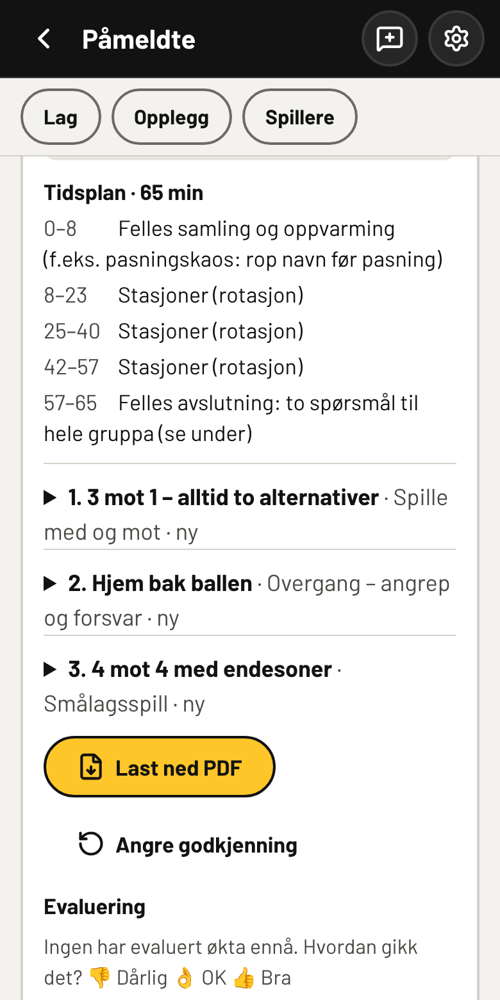
Under Treningsopplegg på arrangementet har du tre valg:
- Lag opplegg: sett sammen selv fra øvelsesbanken.
- Bruk opplegget fra …: kopier opplegget fra forrige trening.
- Lag med KI: KI foreslår et helt opplegg (under).
Felles oppvarming
Øverst i opplegget velger du Felles oppvarming: en øvelse fra banken (kategorien Oppvarming) som alle gjør sammen før stasjonene. Nye opplegg starter med den best vurderte oppvarmingsøvelsen, og KI velger også en. Den vises først i opplegget, i Dagens økt og i PDF-en.
Lag opplegg med KI
KI bygger økta ut fra månedens tema i årshjulet, lagets standard, baner og utstyr, øvelsesbanken og evalueringene. Øvelser som er tagget med temaet, og som passer aldersgruppa, velges først. Bruker dere egne ord i årshjulet, som «Pasning og mottak», kobler appen dem til NFFs hovedtema og delferdigheter. Da får KI læringsmomentene som hører til, og øvelser tagget med de samme NFF-begrepene kommer først. Bruker flere lag på samme alder de samme øvelsene i økter med det samme ordet (minst 3 økter fra minst 2 lag), kommer de også først, og KI får vite hvor mye de er brukt og hvordan de er vurdert. Ulike skrivemåter av samme tema, som «Spille oss frem» og «spille fremover», teller sammen, og temaer med samme NFF-kobling, som «Sentring» og «Innlegg», teller med som lignende. Appen bruker bare tellinger, aldri hvilket lag. KI passer også på at øvelsene som pågår samtidig, ikke trenger mer utstyr enn laget har. Rekker ikke utstyret til alle samtidig, lar KI gruppene rullere mellom stasjonene, og først om det ikke holder, velger den en variant som trenger mindre utstyr. Du kan justere:
- Baner (de faste banene er valgt på forhånd) og lengde på økta.
- Trenere på økta – fylles ut fra Spond. KI lager ikke flere stasjoner som trenger en voksen enn det kommer trenere.
- Ønsker, for eksempel «mindre kø» eller «lite utstyr». Ikke skriv navn eller helseopplysninger.
- Lenker til øvelser på tiim.no eller fotball.no (maks 3).
- Modell: Standard eller Billigere. Beregn pris viser anslått pris for akkurat denne bestillingen, rett under knappen. Linjen «Månedsbudsjett» under viser hvor mye laget har brukt av sitt månedlige KI-budsjett.
Opplegget lagres som et utkast. Se over, endre det du vil, og trykk Godkjenn versjon …. Har opplegget nye øvelser, spør appen om de skal inn i banken som kandidater.
På banen: Dagens økt
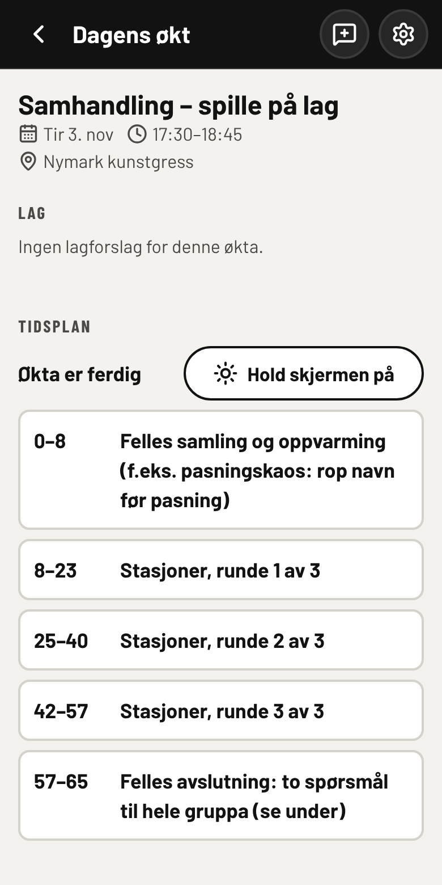
Dagens økt er laget for mobilen på banen: lagene, en enkel tidsplan («Stasjoner, runde 1 av 3» osv., med Nå og Neste), og hele beskrivelsen av hver øvelse med læringsmomenter og spørsmål til spillerne. Hele rulleringsplanen, med hvilken gruppe som er på hvilken stasjon, står i opplegget og i PDF-en.
Trykk Hold skjermen på, så slukker ikke telefonen midt i økta.
Vil du heller ha papir, gir Last ned PDF opplegget til utskrift.
Trenerne kan skrive kommentarer på opplegget. Skriv uten navn: kommentarene kan sendes til KI.
4Etter treningen: evaluer økta
Det viktigste i hele appen
Øvelsesbanken og KI lærer bare av evalueringene deres. Uten evalueringer vet ikke appen hvilke øvelser som fungerer for vår aldersgruppe, og KI fortsetter å foreslå de samme øvelsene – også de som ikke fungerte. Det tar to–tre minutter, og det er de minuttene som gjør neste opplegg bedre.
Slik evaluerer du
Trykk Evaluer i påminnelsen øverst på forsiden, eller Evaluer økta på arrangementet. For hver øvelse:
- 👍 Bra, 👌 OK eller 👎 Dårlig.
- Stikkord – trykk alle som passer: for lett mye venting/kø uklar forklaring banen for liten gøy fikk fram temaet …
- Faktisk tid i minutter, hvis den var annerledes enn planen.
- Bruke igjen? Ja, Med endringer eller Nei.
- Kommentar: hva bør endres? Konkret og uten navn.
Til slutt Hele økta: tommel, stikkord som god progresjon mye tid til organisering for få trenere, og hvor mange spillere som kom. Trykk Lagre evalueringen.
Raskere: «Fortell om økta»
Trykk Snakk (eller skriv) og fortell med egne ord hvordan det gikk, på vei hjem fra banen. Trykk Fyll ut med KI, så fyller KI ut skjemaet. Du ser over og retter før noe lagres. Navn på spillere fjernes før teksten sendes til KI.
Alle trenerne bør evaluere
Hver trener på økta evaluerer for seg. Dere så ulike stasjoner og ulike spillere, og appen trenger flere stemmer: et mønster regnes først med når det står minst tre økter og minst to trenere bak det. Én trener alene flytter lite.
Evaluer også øvelser dere har brukt før
Du kan evaluere en øvelse rett fra øvelsesbanken (skjema-ikonet ved øvelsen), uten at den har vært brukt på en trening i appen. Bruk det for øvelser dere kjenner godt. Det går raskt å få banken i gang.
5Slik blir banken bedre
Øvelsesbanken er felles for alle lagene i appen. Hver evaluering, fra hvert lag, går inn i samme kretsløp:
| Det dere gjør | Det skjer i banken |
|---|---|
| 👍 + «Bruke igjen: Ja» på en ny øvelse | Øvelsen går fra kandidat til aktiv. Uten det blir den liggende som kandidat. |
| Samme stikkord fra flere trenere (f.eks. «mye venting/kø») | KI lager et forslag til en bedre versjon av øvelsen, som venter i Forbedringer. |
| 👎 og «Bruke igjen: Nei» over tid | KI slutter å foreslå øvelsen for denne aldersgruppa, og den kan bli foreslått arkivert. |
| En øvelse er bra for én alder og dårlig for en annen | Appen foreslår en variant tilpasset aldersgruppa. |
| Evaluering av «Hele økta» | KI lærer hvilke øvelser som fungerer sammen, rekkefølge, og hvor mange stasjoner som passer. |
| Ønsker til KI og kommentarer | Behov som går igjen («færre spillere per gruppe») blir faste hensyn for aldersgruppa. Bare behovet lagres, ikke teksten. |
| Faktisk tid og antall spillere | KI treffer bedre på tid og gruppestørrelse neste gang. |
Slik gir dere banken mest
- Evaluer samme dag, mens dere husker økta.
- Vær ærlig: 👎 er like nyttig som 👍.
- Bruk stikkordene, de er det appen teller best.
- Skriv konkret: «for lang kø ved avslutning, del i to» er bedre enn «ok».
- Fyll inn faktisk tid og antall som kom.
- Evaluer hele økta, ikke bare øvelsene.
Dette gjør banken dårligere
- Å hoppe over evalueringen: da lærer appen ingenting.
- 👍 på alt av vane: da ser dårlige øvelser gode ut.
- Bare tommel, uten stikkord: appen vet ikke hva som var galt.
- Navn på spillere i kommentarer: de blir stoppet eller fjernet, og skal ikke stå der.
6Øvelsesbanken og KI
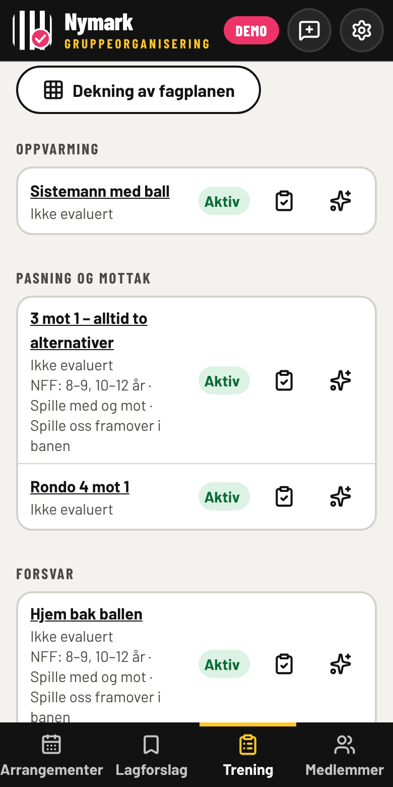
Under Trening → Øvelser ligger alle øvelsene, sortert etter kategori. Hver øvelse har en status:
- Aktiv – brukes av KI og i opplegg.
- Kandidat – ny øvelse som venter på en 👍 og «Bruke igjen: Ja».
- Arkivert – brukes ikke lenger.
Se, evaluere og justere
- Trykk på navnet for å se øvelsen: tegning, organisering, gjennomføring, læringsmomenter og variasjoner. Der kan ingenting endres ved et uhell.
- Skjema-ikonet åpner evalueringen av øvelsen.
- Stjernene åpner Juster med KI: skriv hva som skal endres («færre spillere per stasjon», «passe for 8 år»). KI lager et forslag, og du ser over før noe lagres. Herfra kan du også velge Endre manuelt.
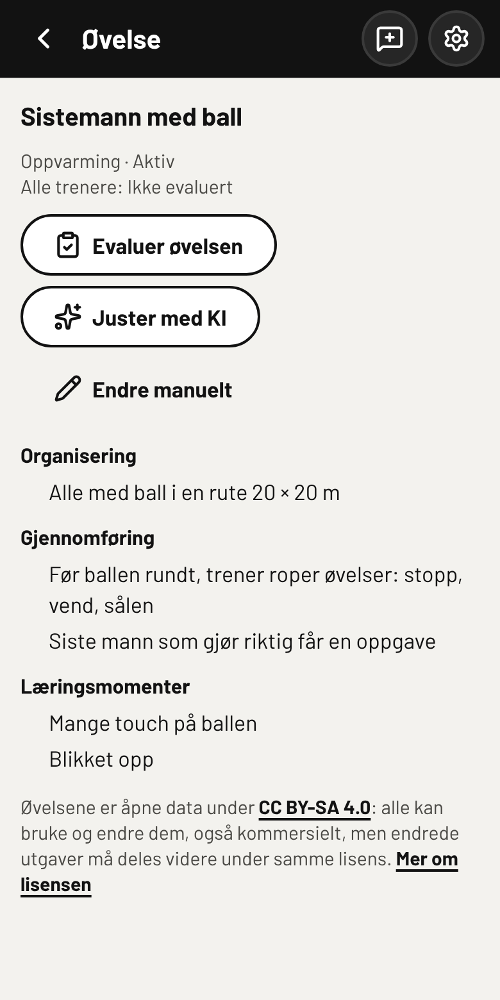
Ny øvelse med KI
Ny øvelse med KI lager én øvelse ut fra tema, kategori, antall spillere, tid, baner og ønsker. Den legges i banken som kandidat, merket «Ny». Ligner den for mye på en øvelse som finnes, blir den stoppet. Vil du skrive selv, bruk Lag øvelse uten KI nederst.
Øvelsene er åpne data
Øvelsene deles under lisensen CC BY-SA 4.0: alle kan bruke og endre dem, men endrede utgaver må deles videre på samme måte. Når du lagrer en ny eller endret øvelse, deles den under samme lisens.
På PC: rutenett og filtre
På en bred skjerm vises banken som kort med et lite bilde. Over kortene kan du søke i navn og filtrere på aldersbånd, hovedtema, aktivitet, delferdighet, kategori og vurdering.
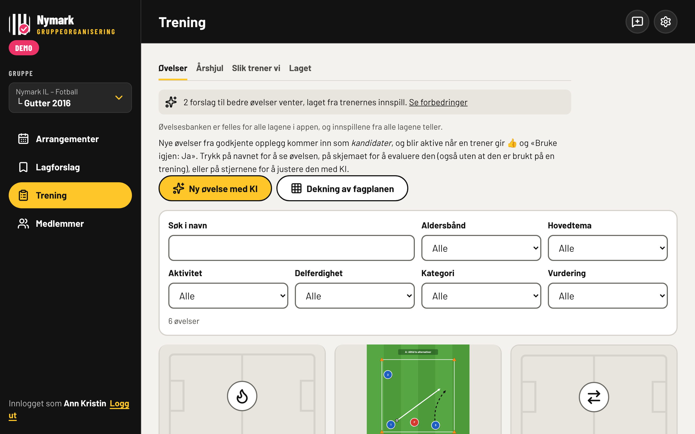
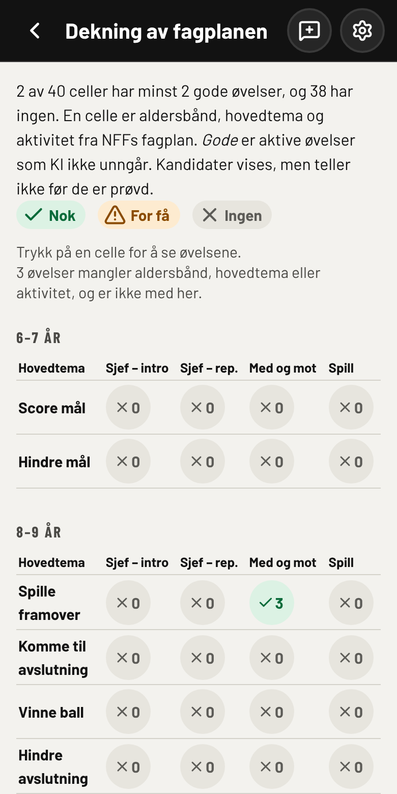
Dekning av fagplanen
Dekning av fagplanen viser hvor godt banken dekker NFFs fagplan: et rutenett med aldersbånd, hovedtema og aktivitet, med antall gode øvelser og kandidater i hver rute. Trykk på en rute for å se øvelsene. Last ned hullene gir en liste over det som mangler.
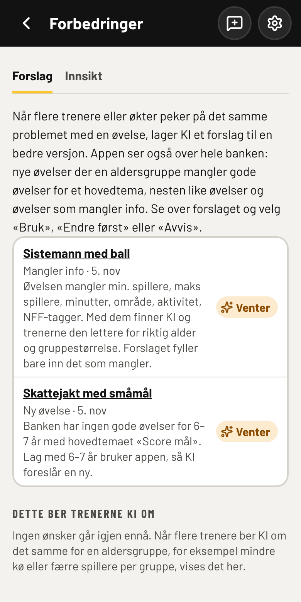
Forbedringer og Innsikt
Når flere trenere peker på det samme problemet, lager KI et forslag til en bedre øvelse. Appen ser også etter hull i banken (aldersgrupper som mangler gode øvelser for et tema), nesten like øvelser og øvelser som mangler informasjon. Forslagene venter under Se forbedringer. Velg Bruk, Endre først eller Avvis. Ingenting endres i banken før en trener har sagt ja.
Fanen Innsikt viser om KI blir bedre: hvor mange hurtigopplegg som ble godkjent uendret, hvor mange KI-øvelser trenerne beholdt, og snittet for øktene med og uten KI. Tallene gjelder alle lagene sammen, uten navn.
Det KI ellers bruker
Fanene ved siden av Øvelser gir KI bakgrunnen for laget. Fyll dem ut, så treffer KI bedre:
- Årshjul – månedens tema. KI og Hurtigopprett bruker det. Et nytt år settes opp først: med NFFs begreper velger dere fra NFFs fagplan i nedtrekk hver måned (hovedtema, delferdighet eller læringsmoment først, og så 1–2 læringsmomenter), og KI får nøyaktig det dere har valgt. Med egne begreper skriver dere temaene med egne ord, og appen kobler dem til NFF. Under hver måned står koblingen: Bekreft den, eller velg hovedtema, delferdigheter og læringsmomenter selv med Endre kobling (eller Velg kobling når appen ikke kjenner ordet). Koblingen gjelder ordet for hele laget, også neste år. Endre oppsett bytter senere uten at månedene forsvinner. Sjekk mot NFF viser hvilke av NFFs hovedtema og delferdigheter for aldersbåndet årshjulet dekker, hvilke som mangler, måneder appen ikke kan koble til NFF, og om banken har nok gode øvelser for hver måned. Last ned hullene gir en liste du kan bruke som bestilling på nye øvelser.
- Slik trener vi – lagets prinsipper (KI endrer dem aldri) og lærdommer fra evalueringene. Oppdater med KI skriver lærdommene om ut fra nye evalueringer.
- Laget – fødselsår, øktlengde, utstyr og faste baner (kapittel 7).
7Laget: utstyr og faste baner
Under Trening → Laget står det som gjelder for laget hver gang: fødselsår, øktlengde, utstyr og baner. Har en undergruppe ikke egne innstillinger, bruker den hovedgruppas. Lagrer du, får undergruppa sine egne.
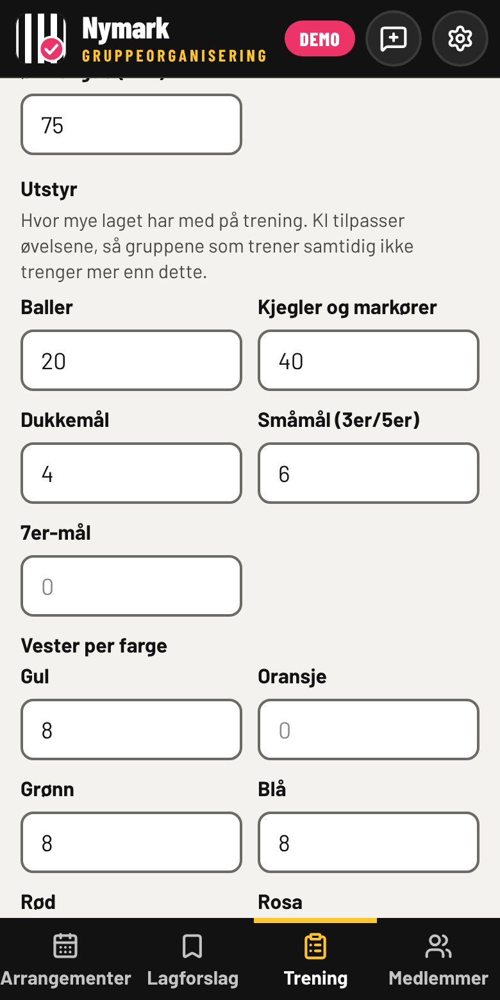
Utstyr
Fyll inn hvor mye laget har: baller, kjegler og markører, dukkemål, småmål (3er/5er), 7er-mål og vester per farge. Det som ikke har et eget tall, skriver du under Annet utstyr.
KI lager opplegg der øvelsene som pågår samtidig, ikke trenger mer enn dette. Mangler det, velger KI en variant som trenger mindre, eller lar gruppene starte på ulike stasjoner.
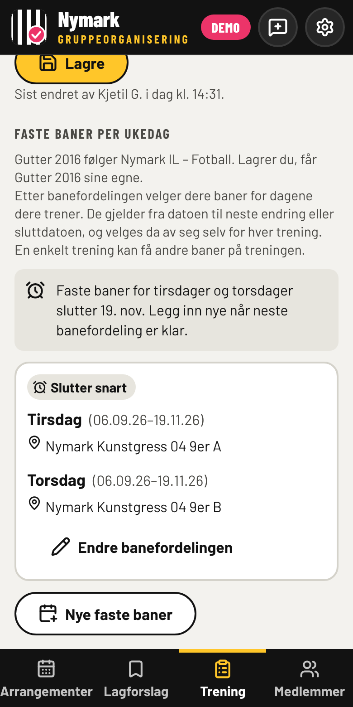
Faste baner per ukedag
- Trykk Nye faste baner når banefordelingen er klar.
- Huk av dagene dere trener, og velg baner for hver dag fra en dato.
- Sett sluttdato: når neste banefordeling ventes.
Banene gjelder til neste endring, og dagene dere ikke velger, beholder banene sine. Tre uker før sluttdatoen minner appen dere på å legge inn nye. Etter sluttdatoen sier treningene fra om at de mangler bane. Endre banefordelingen endrer dager, datoer og baner samlet. En enkelt trening kan få en annen bane på treningen (kapittel 2).
8Gi tilbakemelding
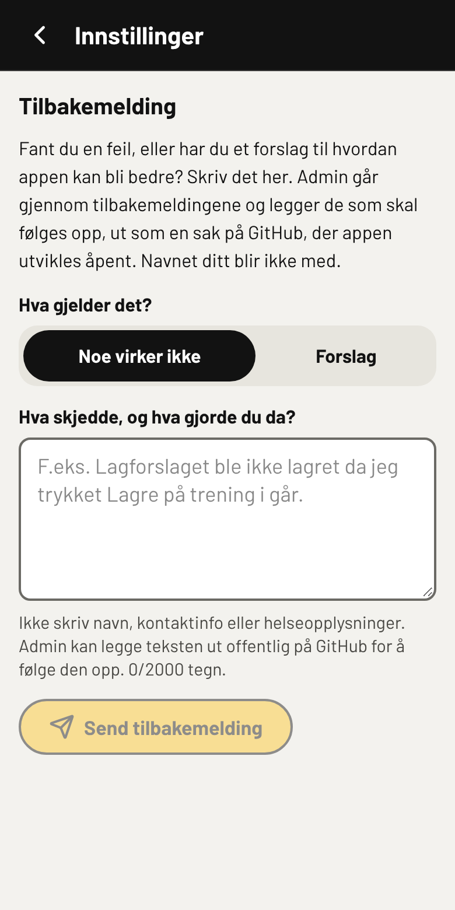
Virker noe ikke, eller har du en idé? Trykk på snakkeboblen øverst ved tannhjulet (eller Innstillinger → Gi tilbakemelding).
- Velg Noe virker ikke eller Forslag.
- Skriv kort hva som skjedde og hva du gjorde.
- Trykk Send tilbakemelding.
Siden du var på, appversjonen og hva slags telefon du bruker følger med, men ikke navnet ditt. Kjetil går gjennom tilbakemeldingene og legger de som skal følges opp, ut som en sak på GitHub, der appen utvikles. Den kan bli offentlig, så ikke skriv navn, kontaktinfo eller helseopplysninger. Du kan sende fem tilbakemeldinger i døgnet.
Under Innstillinger → Hva er nytt ser du hva som er endret i hver versjon, og under Innstillinger → Bruksanvisning finner du alltid den nyeste utgaven av denne bruksanvisningen.
9Personvern – tre regler
- Ingen navn på spillere i kommentarer, ønsker til KI, evalueringer eller tilbakemeldinger. Appen stopper eller fjerner navn den kjenner igjen, men ikke alle.
- Ingen helseopplysninger (skader, diagnoser og lignende) noe sted i appen.
- Nivå og tagger er til lagfordeling, ikke til vurdering av spillere. Bruk dem nøkternt.
Appen stopper navn på spillere og trenere i tagger, kommentarer, lagnavn, prinsipper og lærdommer. Skriv for eksempel «en av keeperne» i stedet.
Foreldre som lurer på hva appen lagrer, kan lese lagorganisering.vercel.app/personvern (åpen uten innlogging, lenket fra Innstillinger). Ber noen om innsyn eller sletting, si fra til Kjetil: han kan laste ned eller slette alt appen har om en spiller eller trener.
Databasen lagrer bare Spond-ID-er, ikke navn; navnene hentes fra Spond når de vises. Data lagres i EU (Irland). Ingenting med navn sendes til KI.